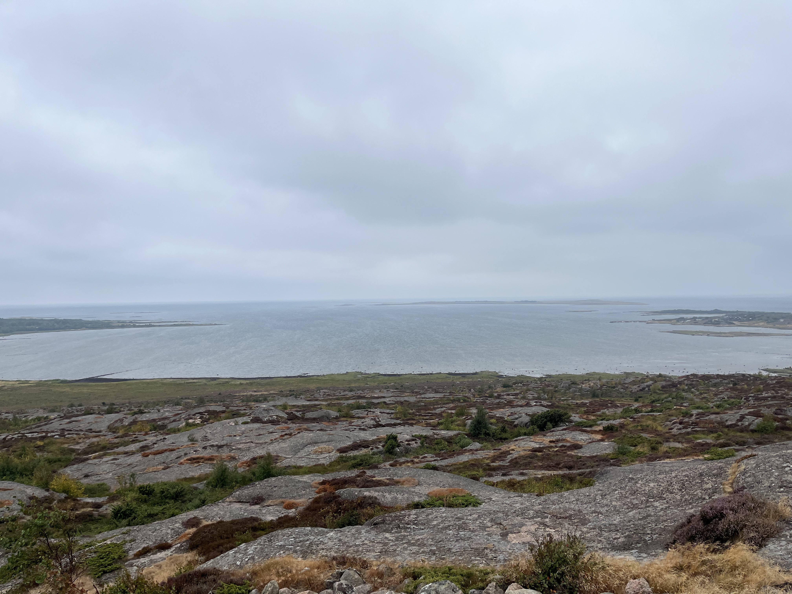

Det högsta berget i reservatet når runt 50 meter över havet. På toppen ligger ett gravröse från bronsåldern och berget har historiskt sett använts som vårdkasberg (för att tända signaleldar). Härifrån får du en fantastisk utsikt över havet och ön Balgö.